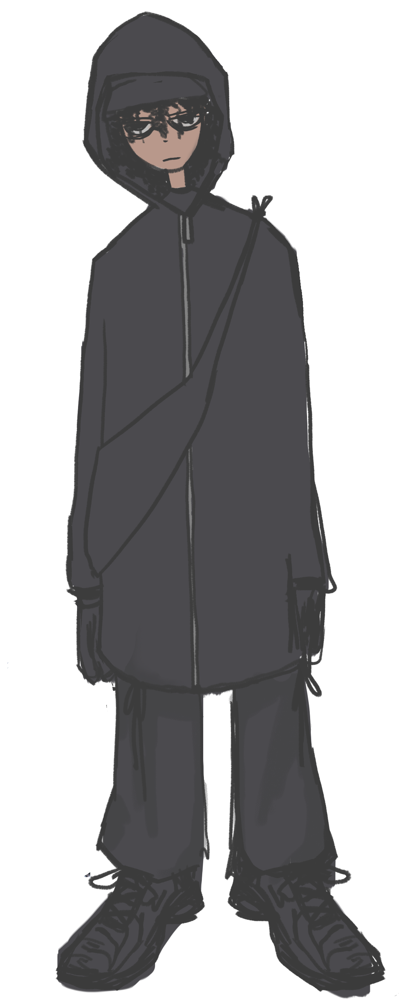

Jeune Schizotypique
Jeune Schizotypique

Slave! est un dispositif de production de contenu entièrement détenu et opéré par Contrôle©.
Slave! opère en tant qu'instrument génératif. Il a pour mission principale de créer du contenu en ligne, à des fins statistiques (voir : « Programme de Ramassage Humain »).
Un élément crucial dans la construction de son persona est son allure androgyne, l’ambiguïté favorisant les interactions entre utilisateurs en commentaires.
Par ailleurs, le choix du format « tierlist » est également entièrement motivé par la volonté de Contrôle d’optimiser l’engagement des utilisateurs.
(*Slave! est une marque déposée par Contrôle©.)